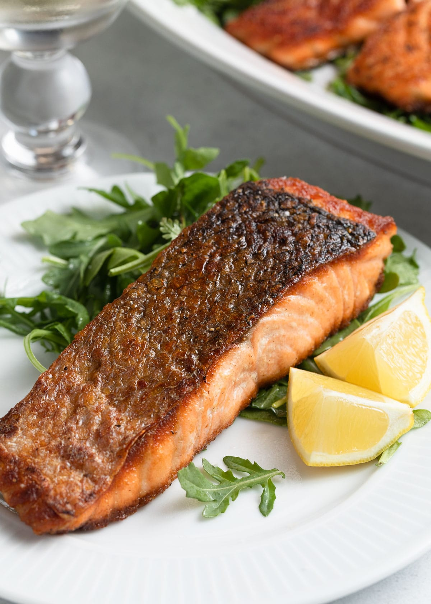

Salmon

Pan Seared Salmon
Found on allrecipes.com. The expected prep time for this recipe is 10 minutes,
cook time is 10 minutes. It should be a total of 20 minutes and serves 4.
Ingredients
- 4 (6 ounce) fillets salmon
- 2 tablespoons olive oil
- 2 tablespoons capers
- 1/8 teaspoon salt
- 1/8 teaspoon ground black pepper
- 4 slices lemon
Steps
- Preheat a large heavy skillet over medium heat for 3 minutes.
- Coat salmon fillets with olive oil; place skin-side down in the preheated skillet and increase heat to high
- Sprinkle with capers, salt, and pepper; cook for 3 minutes on one side. Turn salmon fillets over; continue to cook until salmon flakes easily with a fork,
about 5 minutes.
- Transfer salmon to individual plates and garnish with lemon slices.